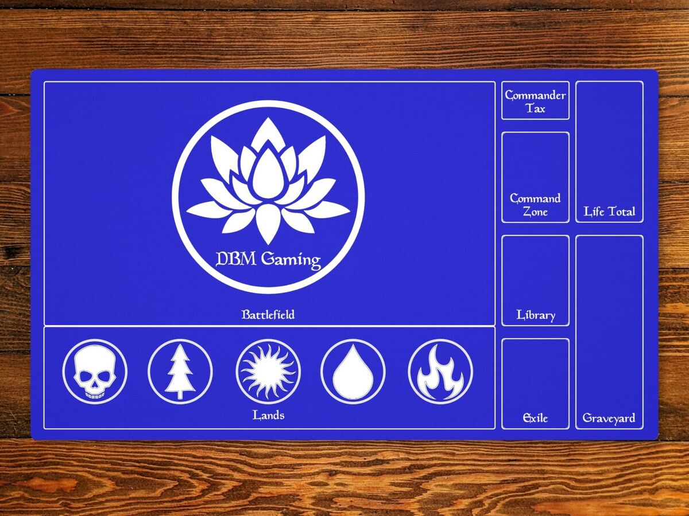
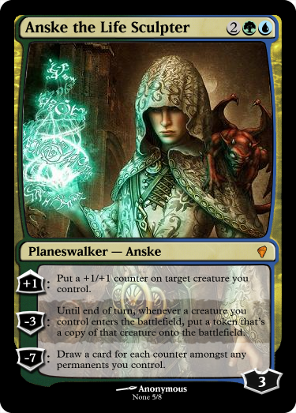

What is Magic?
Magic the Gathering is a trading card game that came out in 1993 and it was the first trading card game to come out. There are many game modes you can engage in and many different ways to play the game. There is tabletop play with physical cards, online formats, or professional tournaments. No matter what game mode you are playing, there is a structure to magic that is universally used for everything.
The Play Area
First you need to understand the play area. The library is where the deck is kept to draw from. Before every game the library is shuffled. The graveyard is where cards go after being used or after dying in combat. The exile pile is different than the graveyard, because once exiled a card cannot come back. The life total spot is for a counter to keep track of how much life you as a player have left. The rest of the mat is deemed the battlefield. The bottom of the battlefield is dedicated to lands that are played, while the rest of it for other cards that are played. The lands don't have to be on the bottom, it is just the usual set up players use. You will notice a commander zone and command tax on this playmat, that is for a game mode called commander, which is explained under the game modes tab.
Different Cards
Next there are obviously the cards that drive the game. Cards can be put in two categories: permanent and non-permanent. Permanent cards include lands, creatures, artifacts, and enchantments. Lands are very important because lands create the mana that you use to play cards. There are five colors of mana: white, black, green, blue, and red. The colors all have different play styles but at the root of it, the color of mana just determines which cards it can summon. Basic lands show which color they are in the main content of the card on the bottom. You can play a land once per every turn, and it costs no mana.


The rest of the cards use the mana from your lands to be summoned. In the top right corner it shows which color must be used and how many, sometime with multiple colors, this tells us the card's color identity. Sometimes there will be a grey circle with a number in it. This just means any color of mana can be used for that portion of mana, this is referred to as colorless mana. The number is how many mana of any color must be used. A creature card is a permanent that can be used in combat. It can attack other players or defend you from them. Sometimes they will have other special abilities that can be useful, but to understand them you just have to read it. On the bottom right corner of creature cards you will see a counter such as the 3/3 on the beast card. This shows the creatures power/toughness. The power is how much damage it can do, and toughness is how much damage it can take. When hit by a creature with bigger power than it can take a creature is put in the graveyard.
The last couple permanents are artifacts and enchantments. Artifacts usually represent an object or mechanic that can be used. Enchantments are lingering magical effects that stay on the field. There is also a special permanent called a planeswalker. These are basically a creature that cannot attack, instead it has special abilities that you can activate. On the bottom of a planeswalker there is the loyalty counter, which is used to activate the abilities or, if directly attacked, used as its toughness.
Non-permanents include instants and sorceries. The difference between the two is that a sorcery can only be cast during your turn, and an instant can be played during your turn or during your opponent's. After these have been cast they are discarded into the graveyard.
Playing a Game
When you start playing magic it might seem intimidating, just remember that all it really consists of is some rules and reading. Playing with friends always makes a first game less intimidating. First you start by shuffling the library and draw seven cards. If you are unsatisfied with your hand you can mulligan. A mulligan is when you shuffle the first hand into the library. Then your opponent will cut your deck and you can draw seven new cards, and put 1 card on the bottom of your library for every mulligan you have done.
Every turn of MTG is broken into phases. The first phases consists of untap, upkeep, and draw. The untap step just means untapping tapped cards. Tapping is when you turn a card to use its ability. The most common instance of this is using mana. When you use a mana you tap the land with the mana you use. Creatures are also tapped when they enter combat. So after you have untapped your tapped cards you do your upkeep. Upkeep is often skipped unless you have a card that specifically calls for something to happen during upkeep. Then you end the first phase by drawing a card.
The second phase is refered to as the first main phases. This is when you can play your one land for the turn, and cast any spells. Spells are any card you use mana to cast. You do not have to play all the spells you want to during this turn because there is a second main phase. But after the first main phase is when combat can be declared. Combat is declared by you as a player. They say which creatures will attack, and then your opponent will declare any instants or creatures they want to block with. If they have none, the player takes the damage. When a creature is blocked by another, it is important to note that extra damage does not then hit the player, unless there is a special ability that states otherwise.
After combat has finished you have your second main phase to cast any other spells you would like, but remember you cannot play another land. You then have the end step where you discard any extra cards you may have, you can only have seven cards in your hand at a time. As you can already see, there are so many special abilities on cards that make this game so fun. So get out there and start hands on learning!